Short Description
Lumen Grove is a cozy mobile game about restoring a forgotten magical forest. Grow plants, decorate your grove, help its inhabitants, and bring light back to a world touched by darkness.
Official Press Kit
Grow a magical forest.
Bring its light back.
Official artwork, screenshots, and game information for your next story.
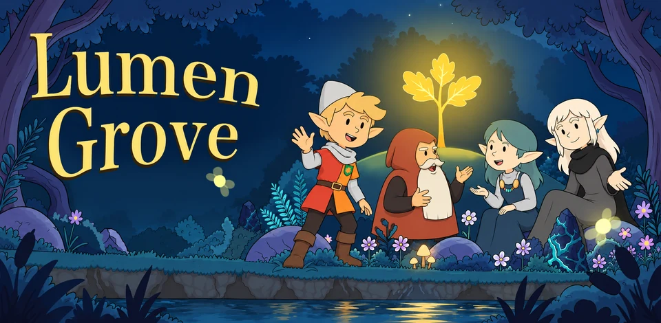
Lumen Grove: Cozy Forest Farm
Android iOS planned
01 Overview
Lumen Grove is a cozy mobile game about restoring a forgotten magical forest. Grow plants, decorate your grove, help its inhabitants, and bring light back to a world touched by darkness.
02 Features
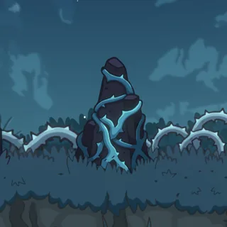
Clear obstacles, open new spaces, and gradually bring the grove back to life.
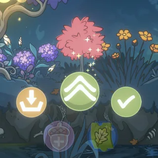
Plant, upgrade, and harvest different trees, bushes, and flowers.
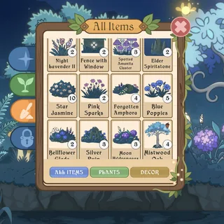
Arrange plants and decorations to create a forest that feels personal.
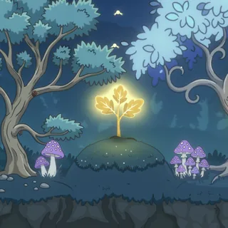
Earn Light through your actions and offer it to the ancient tree to help it grow.
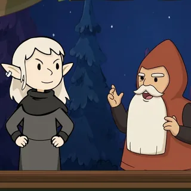
Complete requests, collect rewards, and discover stories from the world of Lumen Grove.
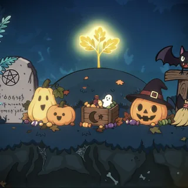
Discover themed decorations, special activities, and limited-time events.
03 Trailer & Gameplay
Gameplay
Discover the world of Lumen Grove through gameplay footage. Watch the forest come to life as players grow magical plants, explore its systems, and decorate their own little woodland sanctuary.
Full gameplay footage · 2:14 · MP4 · 38.8 MB
04 Screenshots
A closer look at the magical forest, its inhabitants, and the little moments that bring it to life.
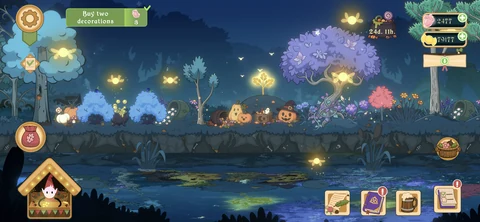
A peaceful forest filled with magical plants, glowing fireflies, and mysterious creatures.
Download PNG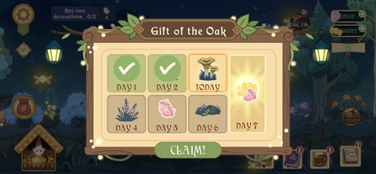
The Gift of the Oak brings a new reward to collect each day.
Download PNG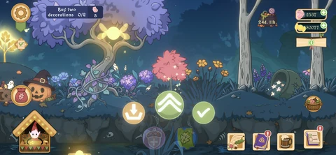
Plant magical trees and bushes, nurture them, and collect resources as they grow.
Download PNG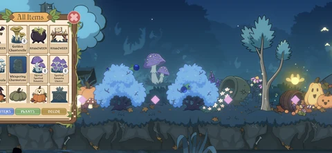
Arrange plants and decorations to create your own magical forest.
Download PNG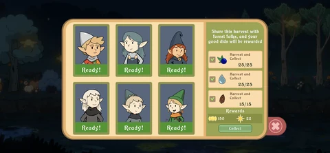
Fulfil requests from the inhabitants of the grove and earn rewards.
Download PNG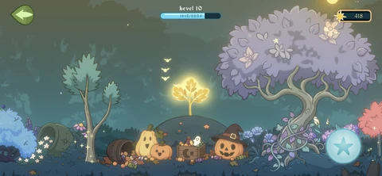
Collect Light through your actions and offer it to the Great Oak to help it grow.
Download PNG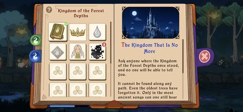
Discover stories from the world of Lumen Grove in the lore book.
Download PNG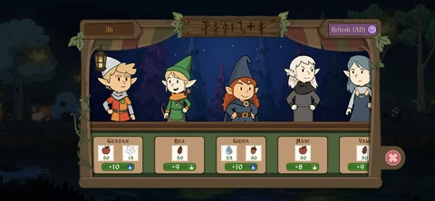
Meet the forest folk and browse their requests at the tavern.
Download PNG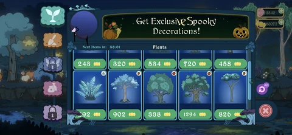
Browse magical plants and Halloween decorations for your grove.
Download PNG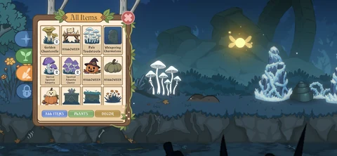
Choose plants and decorations from your collection to shape the grove.
Download PNG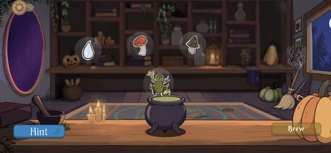
Study a potion recipe and recreate it in the Halloween memory mini-game.
Download PNGOfficial screenshots are provided for editorial use. Select an image to view it at full size, or choose Download PNG to save the original.
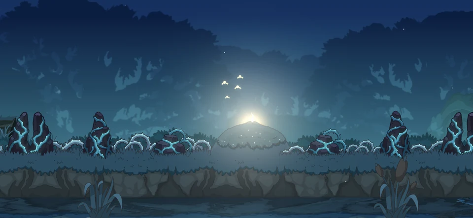
An abandoned grove covered in cursed stones and tangled growth.
Download PNG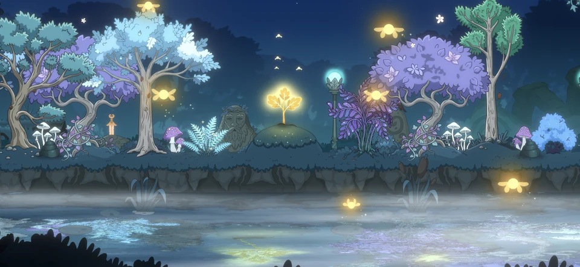
A living magical forest shaped by the player's choices.
Download PNGOfficial visual assets for Lumen Grove, including the application icon and promotional artwork.
The official application icon used on Google Play.
PNG · 1080 × 1080
Download PNGPromotional artwork capturing the atmosphere and magical world of Lumen Grove.
PNG · 1793 × 877
Download PNG05 A Living World
Lumen Grove continues to grow through seasonal events, themed decorations, new activities, and stories. The Halloween event and Witch's Cauldron mini-game bring this LiveOps approach to life, giving players fresh experiences and reasons to return to the grove.
06 Developer
Bogdan Kagitin (Game Creator)
Download JPGPoints Game Studio
Download PNG07 World Building
08 Press Contact
Have a question, working on a story, or interested in featuring the game? We'd love to hear from you.
Thanks for reaching out! We'll get back to you soon.
Prefer email? bogdan@points.gs